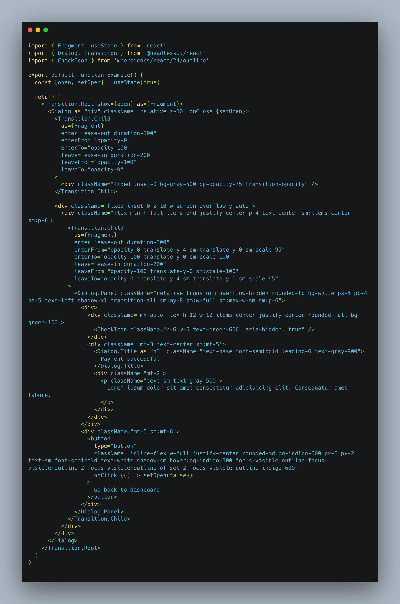
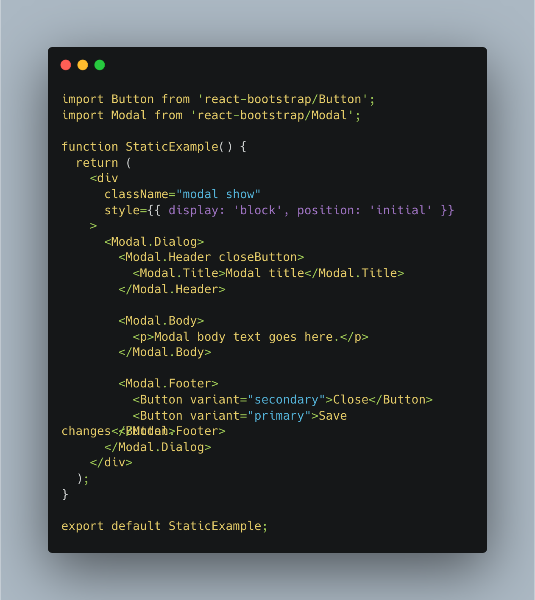

Insert Coffee Here
Bootstrap and Tailwind are both css frameworks but have unique differences.

bootstrap
Pros
- large collection of UI components including dropdowns, modals, navbars
- well established CSS framework, large community and resources
Pros
- fairly easy to customize using the Sass variables and mixins
Cons
- large file size
- hard to customize
- hard to override
Sample


Pros
- Highly customizable: Tailwind provides a large set of utility classes that can be combined and customized to create unique designs.
Pros
- Tailwind makes it easy to create a consistent look and feel across different devices and browsers.
- Small file size. Tailwind's file size is relatively small compared to other CSS frameworks.
Cons
- has a steep learning curve
- Limited pre-built components
- Risk of inconsistent design
Sample

Popularity
Bootstrap is used by 25.7% of all the websites whose JavaScript library we know. This is 21.0% of all websites.
Popularity
Tailwind is used by 0.6% of all the websites whose CSS framework we know. This is 0.1% of all websites.
MODALS
Tailwind
Bootstrap
.png)
Tailwind (Headless React)

React Bootstrap
